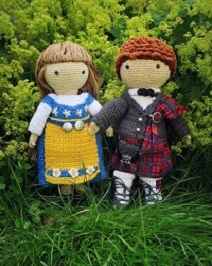
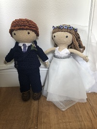
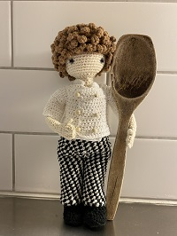

Presentation
Välkommen!
Kul att du hittade hit. Mitt namn är Wivianne Grapenholt. Jag är född 1975, uppvuxen i Helsingborg, numera bosatt i Höganäs. Här nedanför försöker jag ge en bild av vem jag är och mot slutet ska jag summera och förklarar mitt smått kaxiga användarnamn WiviWonderWoman.
Efter många år av att lägga all min energi och tid på att som ensamstående få min och mina fem barns neurodivergenta vardag att gå runt så är jag nu framme vid en milstolpe i mitt liv.
Äntligen vet jag vad jag vill bli när jag blir stor, eller i alla fall inom vilken bransch.
Jag får ofta höra att jag är bra på att: tänka utanför boxen, se detaljer, tydliggörande layout, formulera mig i skrift och vara kreativ.
Utbildningar
| Vård & omsorg | Petri Vårdgymnasium | 1992 | 1993 |
| Koplettering, tredje året | Komvux | 2006 | |
| Larmtekninker | Lernia | avbruten | 2008 |
| Programmering 1 | Hermods | 2020 | |
| Matematik 2a | |||
| Webbutveckling 1 | |||
Arbetslivserfarenhet
| Labratoriediskare | KM Labratorierna AB | 1990 | 1991 |
| Industriarbetare | Höganäs Keramik AB | 1998 | 2004 |
| Undersköterska | Östra Göinge Kommun | 2005 | |
| Markaryds kommun | 2007 | ||
| Lokalvårdare | Tydingesjöns Camping | 2011 | |
| Sans & Balans | 2015 | 2016 | |
Ideela Uppdrag
Som ensamstående förälder till fem barn (födda 1996, 1999, 2000, 2006 samt 2008), nästan alla har vi olika grad av funktionsvarianter så är jag van att ha många bollar i luften. Jag brukar lite skämtsamt säga att jag har många bisysslor: specialpedagog, samordnare, metodhandledare, debattör, sekreterare, dietist, arbetsterapeut, medlare, processhandledare, jurist, ekonomiassistent och städerska… Jag har genom åren gått alla patient- och anhörigutbildningar, alla ålders kategorier, som Region Skåne erbjuder för angående adhd och autism. Vilket har gett mig mycket kunskap i olika strategier för både kognitiva och exekutiva svårigheter och på köpet om hur hjärnan fungerar i allmänhet.
Jag har varit aktiv inom Hyresgästföreningen sedan 2013 och genom åren har jag hunnit med: Kurser - Styrelseutbildning, både ordförande och sekreterare samt Valberednings- och Förhandlingsdelegat-utbildning. Förtroendeuppdrag - på Lokalnivå (kavrter): Ordförande 2013 – 2019 och numera Husombud. Och på kommunalnivå: Styrelseledamot sedan 2015, Sekreterare sedan 2017 och Förhandlingsdelegat för både allmännytta och privata hyresvärdar i 2 år.
Jag sitter i Attention Helsingborg-Ängelholms styrelse sedan 2 år och nyligen tagit över sekreterarrollen även här.
Jag är mentor i en privat Facebook grupp på över 500 medlemmar som drivs av en entreprenör för: "Zero Resistance Planeringsmetod ger dig ett kognitivt stöd i vardagen för att ta kontroll över din dag och nå dina mål, med kreativ frihet för individuell anpassning.” Där jag får möjlighet att stötta och inspirera andra till personligutveckling. Det är genom just Zero Resistence Planner jag har kommit till insikt med vad jag vill i livet. Jag har lärt mig att sätta upp och nå SMART mål genom att använda bland annat Prioriterings matrix, Kanban och timeboxing i min vardag.
Intressen
Jag brinner för att sprida kunskap och motverka alla former av diskriminering och exkludering i samhället. Varmast om hjärtat ligger feminism och ableism (funkofobi)och i synnerhet neuropsykiatriska-funktionsvarianter. Jag älskar att lära mig nya saker och delar gärna med mig av min kunskap till min omgivning.
Att skapa med garn/textil är en passion och på senare tid har det blivit mycket virkande. Inte efter färdiga mönster utan jag skapar på frihand. Här ser du några exempel. De två första bilderna är avbilder av min äldsta dotter och hennes man. Jag tillverkade dom till deras bröllop sommaren 2019. Den sista bilden föreställer min äldsta son när han tog studenten 2020, restaurang och livsmedel. Är du intresserad av att se mer så är du välkommen att kolla på Instagram.
- 
- 
- 
Sumering
Jag har under många år haft en självkänsla långt under genomsnittet, både på grund av yttre och inre omständigheter. De senaste åren har jag jobbat hårt med min personliga utveckling, självbild och självförtroende. Jag har reflekterat, korrigerat och balanserat mig själv och mitt liv. Jag försöker strunta i jantelagen så numera kommer jag på mig själv att vara stolt över vem jag är och vad jag åstadkommer. Jag har fått höra av min omgivning att jag är en ”super-mamma” som fixar allt, att jag är bra på många olika saker och att jag överraskar med mina kunskaper inom vitt spridda områden.
Som en positiv affirmation till mig själv började jag anta användarnamnet WiviWonderWoman i olika spelrelaterade sammanhang. När jag började luta åt att utbilda mig till webbutvecklare insåg jag att det faktiskt är en alternatin akronym till World Wide Web vilket jag tycker är lite små kul. Dessutom har jag en escape-väg de gånger det känns för kaxigt genom att referera till: ”wonder woman i wonder where i left my keys”. Som anspelar på min tankspriddhet, glömska och a(d)hd diagnos.